직접 만든 LXP 도구 세 가지
강의 영상 저장, 새 글 알림, 남은 진도 확인. 필요한 것만 골라서 쓰세요.
강의 다운로더
강의 영상을 재생하면 스트림을 잡아 지정한 폴더에 .ts 파일로 저장합니다.
보통은 강의를 한 번 끝까지 재생해 진도를 채운 뒤 다시 듣습니다. 재생은 그대로 두고 사본을 받아두면, 복습은 배속·구간반복 되는 플레이어에서 원하는 때(오프라인 포함) 하면 됩니다 — LXP에서 매번 새로 스트리밍할 필요가 없습니다.
설치
압축을 안 지울 곳에 풉니다
문서 폴더처럼 오래 둘 위치로. 이 폴더를 지우거나 옮기면 확장이 사라집니다.
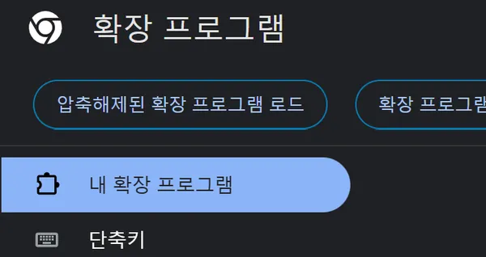
주소창에 chrome://extensions → 개발자 모드 ON
엣지는 edge://extensions. 오른쪽 위 “개발자 모드”를 켭니다.
chrome://extensions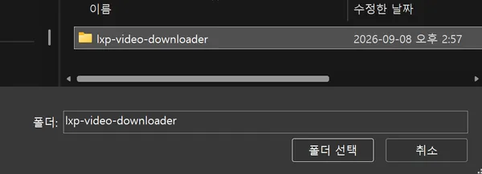
“압축해제된 확장 프로그램 로드” → 압축 푼 폴더 선택
왼쪽 위 버튼입니다. manifest.json 이 들어 있는 폴더를 고릅니다.
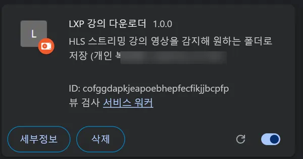
목록에 “LXP 강의 다운로더”가 뜨면 완료
스위치가 켜져 있으면 사용 중입니다. 여기까지면 설치 끝.
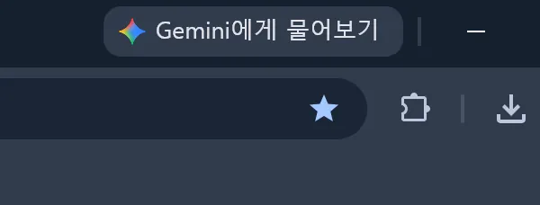
툴바 오른쪽 퍼즐 아이콘 클릭
주소창 오른쪽에 있는 조각(퍼즐) 모양 아이콘입니다.
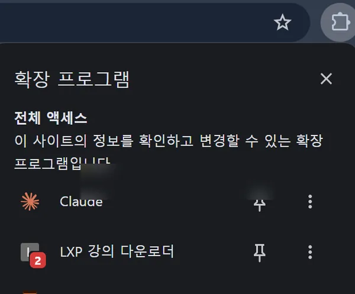
“LXP 강의 다운로더” 옆 핀을 눌러 고정
고정해두면 툴바에 아이콘이 항상 보입니다. 안 해도 동작은 합니다.
사용법
- LXP 강의 영상 페이지를 열고 재생합니다.
- 화면 오른쪽 위 패널이 자동으로 뜹니다. (안 뜨면 툴바 아이콘 클릭)
- “폴더 선택” 으로 저장 위치를 한 번 지정합니다.
- 파일명 확인 후 “이 위치에 다운로드”. 진행바가 끝나면 완료.
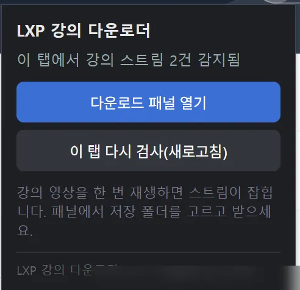
강의 영상을 재생하면 패널에 스트림이 잡힙니다
“스트림 N건 감지됨”이 뜨면 준비 완료. 안 뜨면 “이 탭 다시 검사”를 누릅니다.
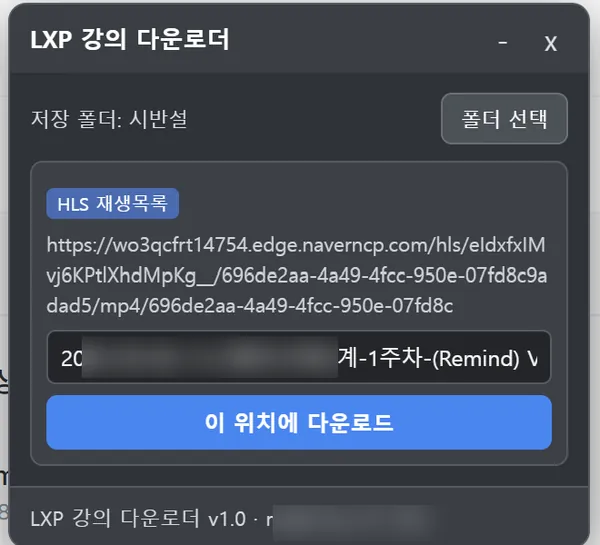
“폴더 선택” → 저장 위치 지정 → “이 위치에 다운로드”
폴더는 한 번만 지정하면 다음부터 기억됩니다. 파일명도 확인하세요.
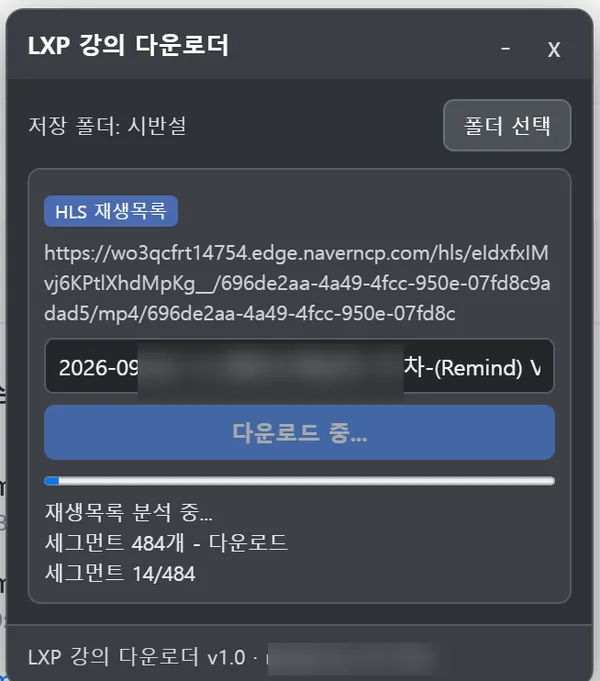
세그먼트를 순서대로 받습니다
“세그먼트 14/484”처럼 진행 상황이 표시됩니다. 탭은 열어 두세요.
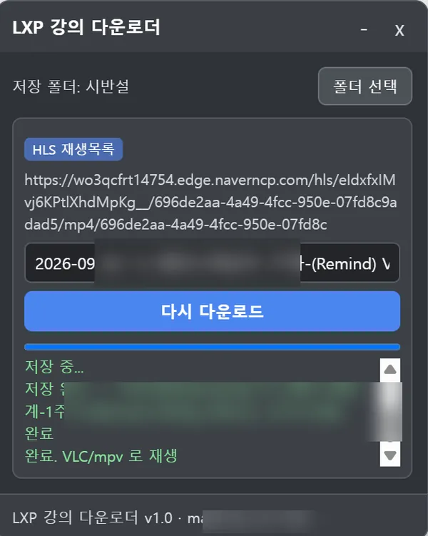
“저장 완료”가 뜨면 끝
지정한 폴더에 .ts 파일이 생깁니다. VLC·PotPlayer·mpv로 바로 재생.
.ts 는 VLC·PotPlayer·mpv로 재생, convert-ts-to-mp4.bat 로 mp4 변환(ffmpeg).새 강의 · 공지 알림
새 강의·자료·공지가 LXP에 올라오면 Windows 알림. 기본 30분마다 자동 확인, 명령어 입력 없음.
설치
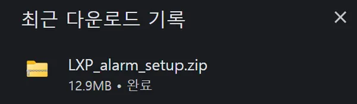
ZIP 다운로드가 끝나면
브라우저 다운로드 목록에 LXP_alarm_setup.zip 이 보입니다.
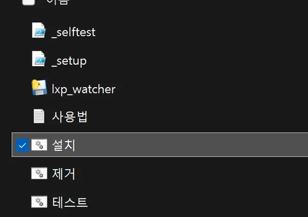
압축을 풀어 아무 데나 둡니다
바탕화면·문서 폴더 어디든. 폴더 안에 설치.bat·제거.bat·테스트.bat 가 있습니다.
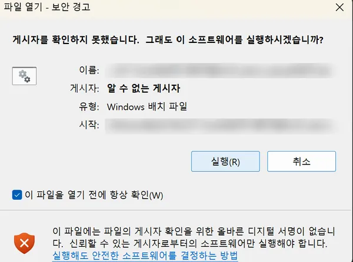
설치.bat 더블클릭 → 파란 경고창은 “추가 정보 → 실행”
“Windows의 PC 보호” 파란 창은 서명 안 된 개인 프로그램이라 뜨는 정상 화면입니다. “추가 정보”를 누르면 “실행” 버튼이 나옵니다.
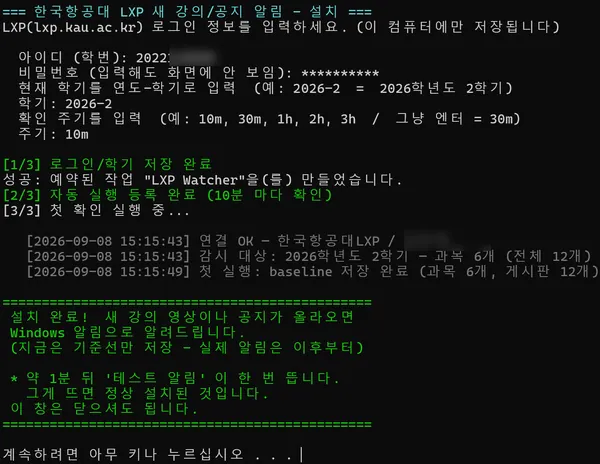
검은 창에 네 가지 입력
LXP 아이디·비밀번호, 학기(2026-2), 확인 주기(30m). 비밀번호는 입력해도 화면에 안 보이는 게 정상입니다.
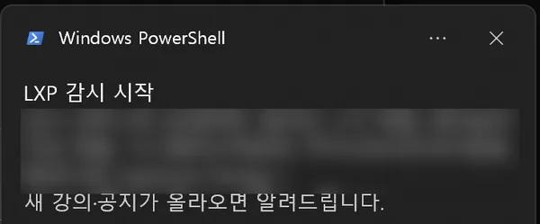
“설치 완료!” + 감시 시작 알림
약 1분 뒤 테스트 알림이 한 번 뜨면 정상입니다. 창은 닫아도 됩니다. 다시 확인은 테스트.bat.
사용법
- 설치 후에는 아무것도 안 해도 됩니다. 컴퓨터가 켜져 있으면 주기마다 확인.
- 새 강의·자료·공지가 생기면 Windows 알림이 뜹니다 (아래 예시).
- 지난 알림은
logs\latest_events.txt에 남습니다. - 다음 학기엔
설치.bat다시 실행해 학기만 새로 입력.
config.ini 에만 저장됩니다. LXP 서버하고만 통신.제거.bat.동영상 진도 현황
LXP에 로그인된 상태에서, 이번 학기 강의 영상의 완료 / 미완료를 마감 임박순으로 오른쪽 사이드 패널에 정리해 보여줍니다.
설치
압축을 안 지울 곳에 풉니다
문서 폴더처럼 오래 둘 위치로. 이 폴더를 지우거나 옮기면 확장이 사라집니다.
주소창에 chrome://extensions → 개발자 모드 ON
엣지는 edge://extensions. 강의 다운로더와 같은 화면입니다.
chrome://extensions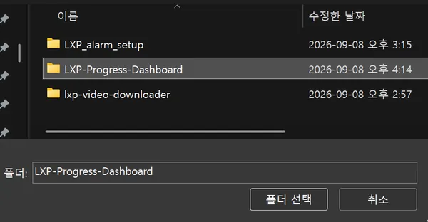
“압축해제된 확장 프로그램 로드” → 압축 푼 폴더 선택
manifest.json 이 들어 있는 LXP-Progress-Dashboard 폴더를 고릅니다.
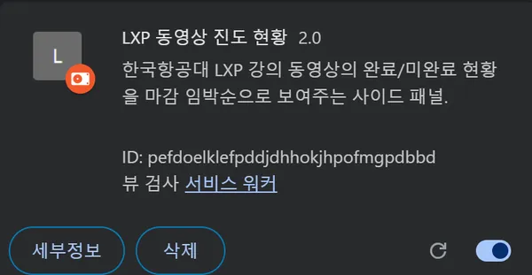
목록에 “LXP 동영상 진도 현황”이 뜨면 완료
스위치가 켜져 있으면 사용 중입니다.
툴바 오른쪽 퍼즐 아이콘 클릭
주소창 오른쪽 조각(퍼즐) 모양 아이콘입니다.
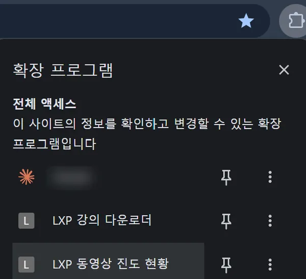
“LXP 동영상 진도 현황” 옆 핀을 눌러 고정
LXP 페이지에서 이 아이콘을 누르면 오른쪽에 진도 패널이 열립니다. 고정 안 해도 동작은 합니다.
사용법
- 브라우저에 LXP가 로그인된 상태로 LXP 아무 페이지나 엽니다.
- 툴바의 진도 현황 아이콘을 클릭하면 화면 오른쪽에 패널이 열립니다. 다시 누르거나 패널의 ✕로 닫으면 오른쪽 가장자리에 “진도현황” 손잡이가 남아, 거기서 다시 열 수 있습니다.
- 카드마다 과목 · 주차 · 마감일과 완료 / 미완료가 표시됩니다. 마감 임박순 정렬.
- ↻ 로 최신 상태를 다시 불러오고, “완료 포함” 체크로 이미 끝낸 영상까지 볼 수 있습니다.
- 다 본 영상은 카드 오른쪽 위 ✕ 로 목록에서 숨깁니다. 하단 “숨긴 항목 N개 · 모두 표시” 로 되돌립니다.
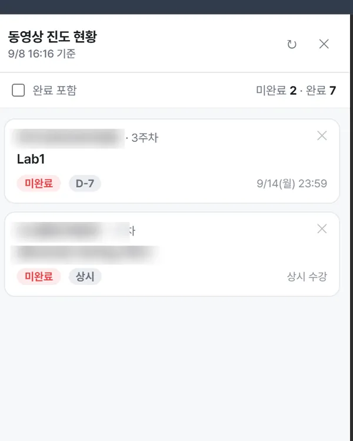
확장 업데이트
확장을 쓰다 보면 패널이나 팝업에 “🔔 새 버전” 알림이 뜹니다. 크롬 웹스토어에 올리지 않은 개인 확장이라 자동 업데이트는 안 되지만, 아래 순서면 1분입니다.
- 알림의 [받기] 클릭 → 다운로드 폴더에 zip 저장. 항상 같은 이름으로 덮어써
(1) (2)가 안 쌓입니다. - 그 zip을 더블클릭해서 엽니다 — 압축은 풀지 마세요.
- 안의 파일 전체 선택(
Ctrl+A) → 복사(Ctrl+C). - 확장이 설치된 폴더를 엽니다 —
chrome://extensions에서 개발자 모드를 켜면 각 확장 밑에 “로드된 위치” 경로가 보입니다. - 그 폴더에 붙여넣기(
Ctrl+V) → “대상의 파일 바꾸기” 선택. chrome://extensions로 돌아가 그 확장의 새로고침(↻) 클릭. (또는 크롬 재시작)
설치.bat 을 다시 실행하면 갱신됩니다.